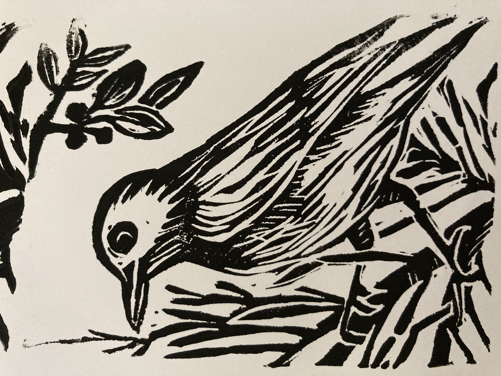

I hold a Ph.D. in computational chemistry and have experience in data science, scientific computing, and project leadership. I am passionate about leveraging data to uncover insights, building robust models, and making accurate predictions. Since data engineering is the backbone of successful data-centric decision-making, I am currently working on improving my data science and engineering skills.
In my free time, I like to walk, read and do lino printing.
